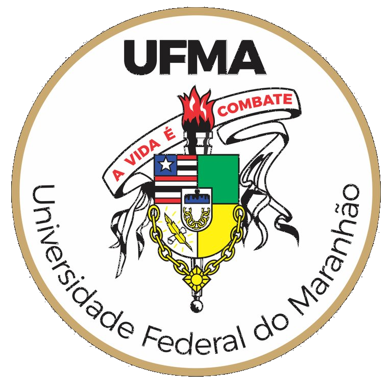

Encontro 8 · Unidade II
Avaliação 1
Métodos e Técnicas de Pesquisa Quantitativa
Prof. Dr. Tadeu Gomes Teixeira

UNIVERSIDADE FEDERAL DO MARANHÃO
Centro de Ciências Sociais · Curso de Administração
SEMPRE+ QUALIDADE · INOVAÇÃO · INCLUSÃO
Como o encontro está organizado
| Bloco | Atividade |
|---|
| 15 min | Orientações e abertura do notebook |
| 45 min | Prova — Parte A (conceitual, sem consulta) |
| 75 min | Prova — Parte B (prática em notebook, com consulta) |
| 15 min | Intervalo |
| 75 min | Entrega da 1ª etapa do projeto + plantão de dúvidas |
| 15 min | Encerramento e panorama da Unidade III |
Métodos e Técnicas de Pesquisa Quantitativa · Encontro 8
Composição da nota da Avaliação 1
| Componente | Peso |
|---|
| Parte A — conceitual (5 questões) | 40% |
| Parte B — prática em notebook (3 tarefas) | 40% |
| Primeira etapa do projeto individual | 20% |
A Avaliação 1 corresponde a um terço da nota semestral (média aritmética
das três avaliações).
Métodos e Técnicas de Pesquisa Quantitativa · Encontro 8
Parte A — regras (45 min)
- Sem consulta: material fechado, telas fechadas;
- 5 questões discursivas sobre os encontros 1 a 7: tipos de pesquisa, problema e
hipóteses, variáveis, amostragem, instrumentos e ética;
- Respostas objetivas e justificadas — frase que responde vale mais
que página que enrola;
- Quem terminar antes pode iniciar a Parte B (o contrário, não).
Métodos e Técnicas de Pesquisa Quantitativa · Encontro 8
Parte B — regras (75 min)
- Abra
encontro08_aluno.ipynb e preencha nome e
matrícula (a matrícula é a semente do seu sorteio — individualiza sua
prova);
- Consulta permitida ao material da disciplina (slides, roteiros,
notebooks anteriores); comunicação entre colegas, não;
- 3 tarefas: classificação de variáveis (10 pts) · plano amostral e sorteio (15 pts)
· tamanho da amostra (15 pts);
- Antes de entregar: Ambiente de execução → Reiniciar e executar tudo —
célula quebrada não pontua.
Métodos e Técnicas de Pesquisa Quantitativa · Encontro 8
Entrega da 1ª etapa do projeto (20%)
Via compartilhamento do notebook do projeto, contendo:
- Tema delimitado (setor, período, território, população);
- Problema em forma de pergunta;
- Hipótese (com H0);
- Variáveis com papel e nível de mensuração;
- Base de dados escolhida, com tabela/série identificada;
- Matriz de amarração preenchida.
Critérios: coerência interna da matriz, viabilidade da base e correção
técnica das classificações. O plantão do bloco 5 tira dúvidas de entrega, não de
conteúdo.
Métodos e Técnicas de Pesquisa Quantitativa · Encontro 8
Checklist antes de sair
- ✅ Prova Parte A entregue;
- ✅ Link do notebook da Parte B compartilhado (todas as células
executadas);
- ✅ Link do notebook do projeto individual (1ª etapa)
compartilhado.
São três artefatos. Confira os três antes de
deixar o laboratório.
Métodos e Técnicas de Pesquisa Quantitativa · Encontro 8
O que vem pela frente: Unidade III
- Encontros 9–10: estatística descritiva, tabelas e gráficos;
- Encontro 11: inferência e testes de hipóteses;
- Encontro 12: Avaliação 2 — análise prática em laboratório;
- Encontro 13: correlação e regressão;
- Sempre sobre as bases que você já conhece: CVM, CEMPRE, Banco Central.
A devolutiva das notas e a resolução comentada da prova abrem o encontro 9.
Tarefa: nenhuma leitura nova — descanse. Quem quiser adiantar: revisar
medidas descritivas de estatística básica.
Métodos e Técnicas de Pesquisa Quantitativa · Encontro 8
← → navegam · clique avança · Ctrl+P exporta PDF